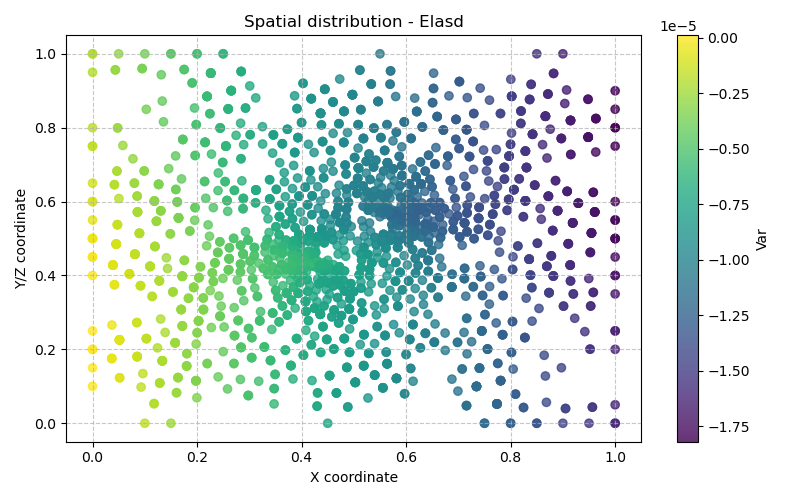

Elasd Model — Elasticity with Isotropic Damage (Quasi-static)
Bil models:
src/Models/ModelFiles/Elasd.c·src/Models/PredefinedMethods/Damage.cInput file:
doc/mkdocs/Mechanics/Elasd/ElasdModel author: P. Dangla
Table of contents
- Context and objective
- Assumptions
- Variables and notation
- Mathematical model
- 4.1 Equilibrium equation
- 4.2 Damaged constitutive law
- 4.3 Damage models (Mazars vs Marigo-Jirasek)
- Input file description
- Simulation results
1. Context and objective
The Elasd model solves solid mechanics problems for materials undergoing significant degradation of their stiffness properties. Particularly suited to concrete, cement or rock media, it simulates intrinsic damage (microcracking of the rigid skeleton).
The test case Elasd illustrates its behavior on a 2D geometry: a rectangular plate with a central void (samplewithvoid.msh), subjected to global uniaxial tension in the form of a displacement blocked at its base and pulled at its free end. The geometric form with a hole creates stress concentrations and allows visualization of damage initiation and propagation (a crack band model).
2. Assumptions
- Quasi-static regime: inertia phenomena are neglected.
- Linearly proportional behavior at small scale, defined by a simple Young's modulus (\(E\)) and Poisson's ratio (\(\nu\)).
- Scalar isotropic damage: degradation is isotropic. Regardless of the load, the structural deterioration is represented by a single erosion variable \(d\) (where \(0 \le d \le 1\)), which progressively degrades the entire Hooke stiffness matrix by a scaling factor.
- Mesh independence: in its Marigo-Jirasek variant (used in the example), the model distributes the surface fracture energy \(G_f\) over the volume via the characteristic crack band width \(w\), thus avoiding the usual problem of intense localization on a single element and unphysical energy drop below a certain refinement threshold.
3. Variables and notation
Primary unknowns
| Symbol | Meaning |
|---|---|
| \(\mathbf{u}\) | Displacement vector for each degree of freedom (e.g., \(u_1, u_2, u_3\), in m) |
Secondary and integration variables
| Symbol | Meaning |
|---|---|
| \(\boldsymbol{\sigma}\) | Symmetric macroscopic stress tensor (Pa) |
| \(d\) | Damage variable (scale from 0 to 1, where 0 = intact, 1 = broken) |
| \(\kappa\) or \(\text{hardv}\) | Hardening variable — stores the maximum strain history for softening computation |
| \(f\) or \(\text{crit}\) | Threshold function (Yield function) measuring whether the current phase induces damage growth |
4. Mathematical model
The implementation is primarily divided between Elasd.c (the finite element solver, assembling tangent stiffnesses \(K\)) and its purely material component PredefinedMethods/Damage.c which computes the tensors.
4.1 Equilibrium equation
The force equilibrium without inertial forces (standard Galerkin formulation of structural mechanics): $ \nabla \cdot \boldsymbol{\sigma} + \rho_s \mathbf{g} = \mathbf{0} $
In this model, meca_1 and meca_2 are assembled with strict mechanical residuals and no fluid coupling.
4.2 Damaged constitutive law
While the initial Hooke's law describes the undamaged frame: \(\boldsymbol{\sigma}_{\text{eff}} = \mathbb{C} : \boldsymbol{\varepsilon}\)
The apparent stress is given by the isotropic damage scalar \(d\) weighting the load-bearing area of the intact material: \(\boldsymbol{\sigma} = (1 - d) \mathbb{C} : \boldsymbol{\varepsilon}\)
The tangent multiplier evaluated in ComputeTangentCoefficients also requires the derivative of \(d\) with respect to strain for Newton-Raphson:
\(\delta\boldsymbol{\sigma} = ((1 - d) \mathbb{C} - \mathbb{C} : \boldsymbol{\varepsilon} \otimes \frac{\partial d}{\partial \boldsymbol{\varepsilon}}) : \delta\boldsymbol{\varepsilon}\)
4.3 Damage models (Mazars vs Marigo-Jirasek)
Elasd automatically selects which law to use based on the input data:
- The classic Mazars option requires max_elastic_strain, \(A_c, B_c, A_t, B_t\) (parameters derived purely from concrete, allowing separation of tension vs. equivalent compression behavior).
- The example model, Marigo-Jirasek, requires a uniaxial tensile failure stress, a fracture energy \(G_f\), and uses an energy approach to release over-stresses by computing a criterion \(f\) and exponentially increasing damage to emulate post-peak softening within the band (\(w\)).
5. Input file description
In the Elasd/ directory, the Elasd file drives exclusively a 2D plane stress/strain demonstration.
-
Geometry & Mesh
Agmshmesh of a rectangular plate with a hole. -
Material
By specifying these 3 fracture and localization band properties, the code immediately switches to the Marigo-Jirasek damage law. -
Mechanical conditions (Tension)
- The bottom axis (Regions 1 and 10) of the plate is clamped (function = 0 blocking rigid body displacements).
-
The loading profile driving the top edge (Region 30) in
u_2prescribes a uniaxial imposed elongation, progressively pulling the base by a fraction equal toF(t). In 1 fictitious time unit, 0.4 mm is forced. -
Time computation and objectives
The solver will trace history at the critical moments of elasticity and then fracture initiating after a macroscopic plateau, stopping artificially just before \(0.3\) (\(u_{2,\text{imposed}} = 0.12\) mm). This avoids simulating the complete failure into two parts of the specimen.
6. Simulation results
This purely mechanical test generates 11 output files with notable and readable behaviors:
- At the initial pole
.t0, all stress or damage \(d\) is strictly zero; the material is at its original rest state. - Throughout the elongation, the rising kinematics in \(u_2\) enter a purely elastic phase. The central void concentrating force lines at its east and west poles subjects these points to the highest tensile strain rates.
- At the final generated stage (
.t10corresponding to parametric time \(0.28\)), the onset of the damage gradient is explicitly detected (activated when the releasable energy at its dead point has been exceeded by the softening criterion). Around the median plane flanking the matrix void, the Damage variable begins to grow above zero (one reads \(d > 0.1\)), demonstrating apparent plasticity due to isotropic failure, releasing the apparent stress in this zone which would otherwise be unbounded. The Marigo-Jirasek law guarantees a finite energy dissipation calibrated on the \(590\) Fracture Energy.

7. Bibliographic references
- Dangla, P. — Bil: a FEM/FVM platform for multiphysics simulations.
- Mazars, J. (1984) — Application of damage mechanics to the nonlinear behavior and fracture of structural concrete. State doctorate thesis, Université Paris 6. (Implemented as isotropic damageable elasticity.)
- Marigo, J.-J. (1981) — Formulation of a damage law for an elastic material. C. R. Acad. Sci. Paris.
- Jirásek, M., & Bauer, M. (2012) — Numerical aspects of the crack band approach. Computers & Structures. (Enabling smoothing of energy dissipation via
crack_band_width, removing mesh dependency.) (Automatically generated graphs for the Elasd example)